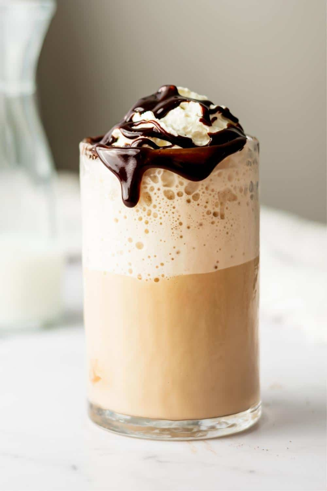

Mocha Frappe
How to Make Mocha Frappe
Mocha frappe is a delicious and refreshing coffee-based beverage. Follow these simple steps to make your own mocha frappe:
Ingredients
- 1 cup strong brewed coffee, chilled
- 1 cup milk
- 1/2 cup chocolate syrup
- 1/2 cup granulated sugar
- 2 cups ice cubes
- Whipped cream, for topping (optional)
- Chocolate shavings, for topping (optional)
Instructions
- Add the chilled coffee, milk, chocolate syrup, and sugar to a blender. Blend until well combined.
- Add the ice cubes and blend again until the frappe is smooth and frothy.
- Pour the frappe into a glass and top with whipped cream and chocolate shavings, if desired.
- Enjoy your homemade mocha frappe!